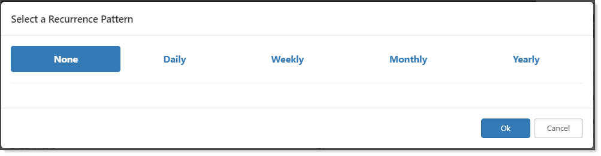

You may have a task that needs to be performed repeatedly within a workspace, perhaps once a day, or once a year. You can set up recurring tasks at the workspace level to automate the process.
To configure recurring tasks:

|
Interval |
Every n days/weeks/months/years, create this task. |
|
Start Date Offset |
Start n days/weeks/months/years. |
|
Due Date Offset |
Due n days after the first day of the month/week/month/year. |
|
Recurrence Configuration |
Options vary depending on what you selected for Interval.
|
|
Recurrence Pattern |
Displays a synopsis of how you configured the pattern. |
After you set a recurring pattern, it becomes read-only. To change the recurring pattern, you must delete the recurrence and reset the pattern.